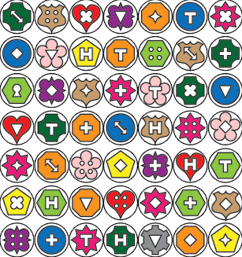

Nanohunts
This puzzle included an interactive component, the details of which are still to be completed.
Diana, goddess of the Hunt, says, "Send one -- and only one -- good, fast, all-around solver to complete this puzzle. Colorblind players may be at a disadvantage (but also may not). Call HQ for an appointment. No tools allowed, not even pen and paper."
Team members were directed to the private dining rooms in Stratton Student Center where they needed to win a "nanohunt" to get the answer for this puzzle. There were three nanohunts available at any one time: one word based, one math or logic based, and one physical based. In all cases, the task was the same: get in the room, find and acquire a particular coin, and get out within the alloted time limit of between two and four minutes.
Failure to successfully complete a particular nanohunt precluded them and members of their team from repeating it, though the other nanohunts remained available and new variations of each nanohunt were also made available over time.
Word based nanohunts
Variation 1
The room contained 25 poker chips, each hidden in a different object (actually placed on a piece of paper next to the name of what we would have hidden the object in if we hadn't run out of time, budget and energy.) The room also contained a magnetic whiteboard (containing the configuration below), a full alphabet of red letters and a set of trigrams:
Variation 1.1
B ??? ? ??? E ARO ATS P ??? ? ??? N BOU HUM C ??? ? ??? E IAN IRC S ??? ? ??? A OBL OUG C ??? ? ??? Y PAR RAD C ??? ? ??? T RAF REA B ??? ? ??? H RGA XTR Make 7 pairs of synonyms that overlap in the central column |
Variation 1.2
S ??? ? ??? H ABL ARE S ??? ? ??? S CRU IFE F ??? ? ??? E IGH ION B ??? ? ??? R NIF OSB S ??? ? ??? E OUS PPL M ??? ? ??? D ROW RUS N ??? ? ??? E TEW TIL Make 7 2-word phrases that overlap in the central column |
Variation 2
The room contained 25 poker chips, each with the name and flag of a country on them, nine cubes with bigrams on each side, a set of crossword clues and a set of instructions to build the answer to the crossword to identify the correct coin:

|
Variation 2.1 ACROSS
|
Variation 2.2 ACROSS
|
Variation 2.3 ACROSS
|
Math/logic based nanohunts
Variation 1
Inside the room were foamboard rectangles with numbers on them and a board. Players were told to always put the larger number in the left-hand column, and that the sum of the numbers in the left-hand column was the combination to a locked briefcase containing the coin.
Variation 1.2
To be completed ??? + ??? = 24 ... ... ??? - ??? = 24 ... ... ??? x ??? = 24 ... ... ??? / ??? = 24 ... ... |
Variation 1.2
To be completed ??? + ??? = 24 ... ... ??? - ??? = 24 ... ... ??? x ??? = 24 ... ... ??? / ??? = 24 ... ... |
Variation 2
Inside the room, players found a 7 x 7 array of coins labelled with different shapes with different shaped holes in them.
There was also the instructions:
The coin you seek is exactly halfway between:
the coin to the immediate left of the coin with the H-shaped hole in the same row as the shield-shaped coin in the same column as the coin with the cross-shaped hole in the same row as the pentagonal coin in the same column as the coin with the keyhole, and
the coin immediately below the octagonal coin in the same row as the coin with four holes in the same column as the heart-shaped coin in the same row as the coin with the clover-shaped hole in the same column as the round coin in the same row as the coin with the T-shaped hole in the same column as the gear-shaped coin.
Variation 3
Players were given 49 coins in piles of height 8, 9, 7, 8, 5, 6 and 6 to be labelled A - G respectively. The instructions read:
(1) Remove three coins so that B x E = 24
(2) Remove three coins so that A x C + E = 35
(3) Remove three coins so that (D : F) + (G x C) = 21 No fractions!
(4) Remove three coins so that [(B + E) x C] + (A x F) = 64
(5) Transfer coins from the tallest stack to the shortest stack until they are the same height. The coin that is now on top of what was the tallest stack is the coin you seek.
Variation 4? - to be completed
Players were given a 7 x 7 array partially filled with coins, and stacks of poker chips with different shaped holes drilled in them. The instructions read:
Within the array, coins that were in the same row needed to have the same overall shape if they were next to each other, but if the row was interrupted by a black, unlabelled coin, then the coins on either side of the black coin had to have different shapes.
Coins that were in the same column needed to have the same shaped hole, unless interrupted by a black, unlabelled coin, then the coins on either side of the black coin needed a different shaped hold.
One coin will be left over, which was the one they needed to take from the room.
Physical based nanohunts
Variation 1
Inside the room, the player was told they needed to reproduce a shown artwork by moving a pad of paper over different colored Sharpie markers attached to various stands (neither the Sharpie pens, nor the stands they are on, were allowed to be moved or dislodged.)
Variation 2
Inside the room was a coatrack containing three rope-and-ring tosses of increasing rope length and ring size though the latter two were padlocked. Players had to loop their ring toss around three CD spindles (later three CD covers) placed at increasing distances. The first two spindles each held keys to unlock the next larger ring toss. The last and furthest spindle contained the coin